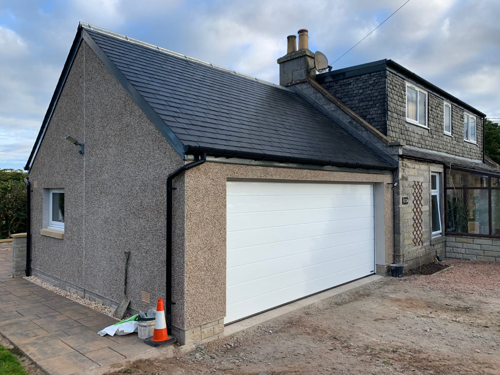

Our Services
Every project is carried out by Lee Marshall personally. No subcontractors, no strangers on site. From groundwork to final finish, one pair of hands you can trust.


Extend Your Space, Not Your Worries
A house extension is one of the most significant investments you will make in your home. Get it right and you gain space that feels like it was always there. Get it wrong and the joins show for decades.
Lee Marshall has been building extensions across Perthshire for over 20 years. He knows how to match existing stonework, tie in roof pitches, and make a new room feel as though it grew from the original house. Every extension is managed personally, from foundations to finishing plaster.
No design agency. No subcontractors turning up unannounced. One man, one standard, start to finish.
- Single and double storey rear and side extensions
- Full structural build, groundwork to roof
- Stonework and render matched to existing property
- All trades coordinated by Lee, no subcontracting


The Space Is Already There
Most Perthshire homes have unused roof space that, with the right build, becomes a bedroom, a study, or a private retreat. A loft conversion is often the single smartest way to add value without disturbing the footprint of your home.
Lee handles the full structural scope: opening up the roof, installing steel where required, fitting the staircase, and completing the interior to the same finish as the rest of your house. He does not hand off mid-project.
The result is a room that feels considered, not bolted on.
- Dormer and Velux conversions
- Full structural steelwork where required
- Bespoke staircase design and installation
- Fully insulated, plastered, and finished to spec


Rebuild It Properly
A full home renovation means touching everything: structure, services, surfaces. It takes someone who knows how each element connects to the next. Do it in the wrong order and you will open up walls twice.
Lee plans the sequence before the first chisel goes in. He carries out the structural work himself, coordinates the services, and completes the internal fit-out to the same standard he would accept in his own home. You get one point of contact, no blame-shifting between trades.
- Full interior strip-out and rebuild
- Structural alterations, beams, and load-bearing changes
- First and second fix carpentry throughout
- Coordinated project management, one contact


Built for How You Cook
A kitchen renovation is not just a cosmetic update. Walls come out, services get rerouted, and the structural shell has to be right before a single unit goes in. That groundwork is where corners get cut and problems start.
Lee carries out the full scope himself. He handles the structural changes, the first fix, and the installation of joinery to precise tolerances. The result fits your kitchen properly, not approximately.
- Full kitchen strip-out and structural preparation
- Bespoke fitted joinery and cabinetry
- Worktop installation: stone, composite, solid timber
- Wall tiling, flooring, and decoration to completion


Every Surface, Done Right
Bathrooms are unforgiving. Tiles show uneven walls. A shower tray sits wrong if the floor is not level. Grout joints reveal whether someone actually measured or just hoped for the best.
Lee takes bathroom renovations from the substrate up. The walls are correct before the tile goes on. The waterproofing is done before the sanitary ware arrives. Everything is sequenced so the finish holds up for years, not months.
- Full bathroom strip-out and tanking
- Tiling, sanitary ware supply and fit
- Bespoke vanity units and joinery
- Wet rooms and walk-in shower enclosures


A Room That Earns Its Place
A garden room is only worth building if it is warm in winter, dry year-round, and looks like it belongs. Plenty of flat-pack options exist. None of them are built the way Lee builds.
He uses proper timber frames, fully insulated to modern standards, with external cladding selected to suit your garden and property. The result works as a home office, a gym, a studio, or a space to sit. It does not look like a shed with aspirations.
- Fully insulated timber-frame construction
- Home offices, gyms, studios, and leisure rooms
- Cladding matched to property and garden setting
- Electrics, heating, and interior fit-out included

Turn Dead Space Into Living Space
Most garages in Perthshire store boxes that have not been opened in years. Converting that footprint into a room gives you square footage you already own, without planning for an extension.
Lee insulates the floor, walls, and ceiling properly, installs the internal partition where required, and completes the fit-out to a standard that matches the rest of your home. It ends up feeling like a room, because it is one.
- Full insulation: floor, walls, and roof
- Internal partitioning and door fitting
- Plastering, flooring, and complete decoration
- Planning advice and structural assessment


Built for the Scottish Climate
Decking in Scotland has to work harder than decking anywhere else. It needs to handle rain, frost, and the weight of Scottish winters without lifting, twisting, or greening over within two years.
Lee selects the right timber or composite for the conditions, frames the substructure correctly so water drains away, and secures every board to a finish that looks clean and stays that way. Balustrades, steps, and integrated planters built to the same standard.
- Hardwood, softwood, and composite options
- Properly framed, level substructure
- Balustrades, steps, and built-in features
- Multi-level and raised platform designs

Detail That Changes the Room
A media wall is not just somewhere to hang a television. Done well, it anchors a room, hides cables, and adds architectural weight that no piece of furniture can replicate.
Lee designs and builds media walls and interior panelling to your exact requirements. Floating shelves at precise heights, recessed sections for AV equipment, and timber panelling profiles that tie in with the wider interior. The joinery is made to fit your room, not adapted from a kit.
- Bespoke media walls with integrated cable management
- Floating shelves and alcove joinery
- Timber wall panelling: shaker, fluted, ribbed profiles
- Painted and stained finishes to your specification

Where Your Home Meets the World
Windows and external doors do two things at once: they affect how your home performs thermally, and they define how your home looks from the street. Older Perthshire properties in particular need careful attention to character when replacing these elements.
Lee sources and fits windows and doors suited to your property type. He also handles the structural lintel work required for new or widened openings, which a window supplier will not touch. You get the full scope from one trade.
- uPVC, aluminium, and timber window systems
- External doors: composite, timber, and glazed
- New and widened openings with structural lintel work
- Sympathetic replacements for period properties

Put Right What Went Wrong
When damage happens, whether from water ingress, storm damage, fire, or subsidence, the repair needs to be done properly. A cosmetic fix over structural damage does not hold. The survey report picks it up eventually, and you pay twice.
Lee works directly with home owners and loss adjusters on insurance repair work. He assesses the full extent of damage honestly, scopes the correct remediation, and carries out the work to a standard that restores the property to what it was. No patch and hope.
- Storm, flood, and fire damage repairs
- Structural remediation to full specification
- Works with loss adjusters and insurer requirements
- Honest scope: no upselling, no unnecessary work

Ready to Get Building?
Every project starts with a free site visit. Lee comes to your property, listens to what you want, and gives you a straight answer on what it will take. No pressure, no obligation, no salesperson.
Why Marshall & Co.
No subcontractors, ever
The same hands that quote your job build your job. Lee Marshall, from first visit to final finish.
Over 20 years in Perthshire
Two decades of work on some of the most demanding properties in the region. Traditional sandstone to modern new builds.
5-Star Google rated
Real reviews from real clients across Perth, Dundee, and Perthshire. The record speaks for itself.
AMT Accredited
Fully accredited member of the Association of Master Tradesmen. Vetted, verified, and backed.